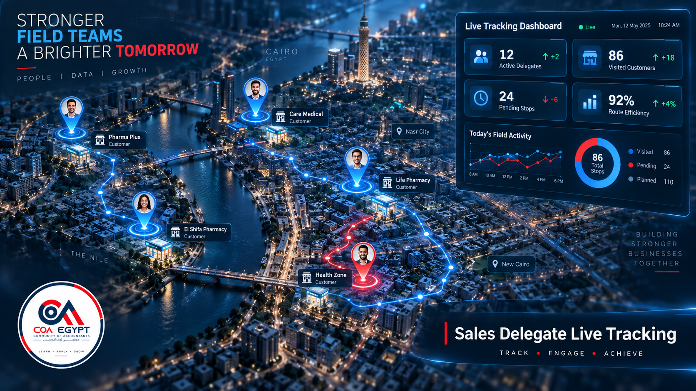

COA Egypt
Community of Accountants
Technical Support
info@coa-egy.com
Odoo 19 · 18 · 17 Ready
·
Community & Enterprise
COA Sales Delegate Live Tracking
Monitor field sales representatives in real time using native mobile browser geolocation. View live agent pins, historical visit routes, and customer visit logs on OpenStreetMap.
Real-Time GPS Tracking
Zero App Installation
OpenStreetMap Dashboard
Customer Visit Logs
Commercial License (OPL-1)
COA Enterprise Solutions → COA Sales Delegate Live Tracking
